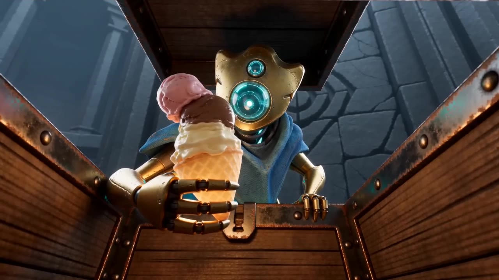

越想要这支冰淇淋，
越显得无力招架。
故事围绕《杀戮尖塔》中故障机器人展开。玩家戏称它为“鸡煲”，作者将其理解为“机器人宝宝”。短片以玩家对角色弱势的调侃为出发点，表现它对冰淇淋遗物的强烈需求，以及面对追兵和Boss时的无力感。
这是一次游戏同人叙事练习，以角色反应和情境反差制造幽默，不作为游戏版本强度评测。

THE DEFECT / A SMALL DESIRE开箱的那一刻，麻烦才刚开始。16:9 / 720P01 / WATCH THE STORY
36.25秒完整成片 · 作者使用剪映剪辑。
先看作品，再看原始片段与迭代记录。
即梦生成素材，作者在剪映中完成剪辑与调整。
保留素材与成片之间的区别，中段采用「拿遗物」版本二。
网页使用轻量播放副本，保留作者剪辑的顺序、时长、60fps与原音轨；原始2K导出文件由作者本地保存。早期35秒FFmpeg初剪参考保留在下方版本档案中。
02 / INTENT & ITERATION
从玩家熟悉的角色调侃出发，
把一个小愿望写成一连串大麻烦。
故事围绕《杀戮尖塔》中故障机器人展开。玩家戏称它为“鸡煲”，作者将其理解为“机器人宝宝”。短片以玩家对角色弱势的调侃为出发点，表现它对冰淇淋遗物的强烈需求，以及面对追兵和Boss时的无力感。
这是一次游戏同人叙事练习，以角色反应和情境反差制造幽默，不作为游戏版本强度评测。
香港科技大学数字与可持续城市硕士在读，本科建筑学。独立制作的抖音游戏内容获得1.6万+播放，也有800余份问卷的数据分析经验。关注游戏社群、AI内容创作与数据驱动的营销迭代。
确定角色表达、故事方向与目标受众；测试生成工具，执行生成；审阅结果、提出修改并选择展示版本；使用剪映完成成片剪辑、转场和收尾。
协助编写人设图、视频场景与镜头调度提示词，并整理规则、技能文档及作品集页面；提供早期初剪参考与剪辑建议。
观察：遗物的移动路径偏离预期，与追赶主体的运动关系不够清楚。
修改：与GPT重新沟通，将“独立飞行”进一步写成同一世界前进方向、固定前后关系和切镜后的轨迹接续。
当前：路径仍未完全满意，继续优化。
观察：出场缺少从墙体内部释放的过程，冲出来的感觉偏僵硬。
修改：补入墙内脉冲、裂纹、肢体突破、碎壳脱落，再到完整现身和追击的连续阶段。
当前：出场动作仍有僵硬感。
观察：中间片段的角色动作仍不够自然，分镜意图没有被完整执行。
下一步：减少单镜并行动作，明确接触点、起止姿态和可插入特写的窗口，按短片段复测。
状态：改进方向，尚未验证完成。
03 / CHARACTER & ASSETS
人设资产与原始参考分开展示。
点击图片放大，或下载原文件。
鸡煲、咔咔、时光老头与冰淇淋 · 四宫格设定
保留最初的鸡煲与绿色史莱姆，记录造型探索过程。
游戏美术参考 · 用于身份、轮廓与配色锚定
动作参考控制调度；成片观察帮助分析摄影与效果。
04 / THE DIRECTOR'S NOTES
正在载入…
05 / A REUSABLE PRACTICE
从本项目整理出的四个创作 Skills。
包含 SKILL.md，可阅读、下载和复用。
06 / CONTENT THINKING
计划很简单：开箱、拿走、跑路。问题是，尖塔里的遗物，好像都带售后追杀。鸡煲这次终于拿到冰淇淋了——但它高兴得是不是早了点？
鸡煲抱着冰淇淋的近景，身后露出时光老头的紫色轮廓。用主角的满足感与背景危险形成反差，保留悬念。
尚未提供社交平台的播放、互动或投放数据。先保留同一作品的观察记录，再据实际反馈决定是否调整开头、封面或文案。
07 / WORKING ARCHIVE
已完成的视频文件与迭代版本。
预览和原文件均可访问。